<!DOCTYPE html>


<html lang="zh-CN">
  

    <head>
      <meta charset="utf-8" />
        
      <meta name="description" content="Over top clear mind" />
      
      <meta
        name="viewport"
        content="width=device-width, initial-scale=1, maximum-scale=1"
      />
      <title>camera calibration 相机标定 |  摸鱼且很菜blog</title>
  <meta name="generator" content="hexo-theme-ayer">
      
      <link rel="shortcut icon" href="/yu_head.gif" />
       
<link rel="stylesheet" href="/dist/main.css">

      
<link rel="stylesheet" href="/css/fonts/remixicon.css">

      
<link rel="stylesheet" href="/css/custom.css">
 
      <script src="https://cdn.staticfile.org/pace/1.2.4/pace.min.js"></script>
       
 

      <link
        rel="stylesheet"
        href="https://cdn.jsdelivr.net/npm/@sweetalert2/theme-bulma@5.0.1/bulma.min.css"
      />
      <script src="https://cdn.jsdelivr.net/npm/sweetalert2@11.0.19/dist/sweetalert2.min.js"></script>

      <!-- mermaid -->
      
      <style>
        .swal2-styled.swal2-confirm {
          font-size: 1.6rem;
        }
      </style>
    </head>
  </html>
</html>


<body>
  <div id="app">
    
      <canvas class="fireworks"></canvas>
      <style>
        .fireworks {
          position: fixed;
          left: 0;
          top: 0;
          z-index: 99999;
          pointer-events: none;
        }
      </style>
      
      
    <main class="content on">
      <section class="outer">
  <article
  id="post-camera-calibration"
  class="article article-type-post"
  itemscope
  itemprop="blogPost"
  data-scroll-reveal
>
  <div class="article-inner">
    
    <header class="article-header">
       
<h1 class="article-title sea-center" style="border-left:0" itemprop="name">
  camera calibration 相机标定
</h1>
 

      
    </header>
     
    <div class="article-meta">
      <a href="/2022/12/16/camera-calibration/" class="article-date">
  <time datetime="2022-12-16T14:52:31.000Z" itemprop="datePublished">2022-12-16</time>
</a>   
<div class="word_count">
    <span class="post-time">
        <span class="post-meta-item-icon">
            <i class="ri-quill-pen-line"></i>
            <span class="post-meta-item-text"> 字数统计:</span>
            <span class="post-count">2k</span>
        </span>
    </span>

    <span class="post-time">
        &nbsp; | &nbsp;
        <span class="post-meta-item-icon">
            <i class="ri-book-open-line"></i>
            <span class="post-meta-item-text"> 阅读时长≈</span>
            <span class="post-count">8 分钟</span>
        </span>
    </span>
</div>
 
    </div>
      
    <div class="tocbot"></div>


  
    <div class="article-entry" itemprop="articleBody">
       
  <span id="more"></span>
<p>[toc]</p>
<h1 id="相机标定-Camera-Calibration"><a href="#相机标定-Camera-Calibration" class="headerlink" title="相机标定 Camera Calibration"></a>相机标定 Camera Calibration</h1><p>将相机抽象成针孔模型进行建模，同时因为透镜的存在，光线投影到成像平面的过程中会产生<strong>畸变(distortion)</strong></p>
<p>相机标定的目的：寻找像素坐标系到世界坐标系之间的转换关系。</p>
<h2 id="相机标定标什么？"><a href="#相机标定标什么？" class="headerlink" title="相机标定标什么？"></a>相机标定标什么？</h2><p>相机内参：f<sub>x</sub> f<sub>y</sub> c<sub>x</sub> c<sub>y</sub> f(这个可以已知，可能和d<sub>x</sub> d<sub>y</sub> 包含到f<sub>x</sub> f<sub>y</sub>) 畸变项：k<sub>1</sub> k<sub>2</sub> k<sub>3</sub> p<sub>1</sub> p<sub>2</sub></p>
<p>相机外参：R T</p>
<h2 id="四个坐标系与针孔模型"><a href="#四个坐标系与针孔模型" class="headerlink" title="四个坐标系与针孔模型"></a>四个坐标系与针孔模型</h2><h3 id="相机针孔模型"><a href="#相机针孔模型" class="headerlink" title="相机针孔模型"></a>相机针孔模型</h3><p><a target="_blank" rel="noopener" href="https://ww2.mathworks.cn/help/vision/ug/camera-calibration.html">camera pinhole model</a></p>
<p>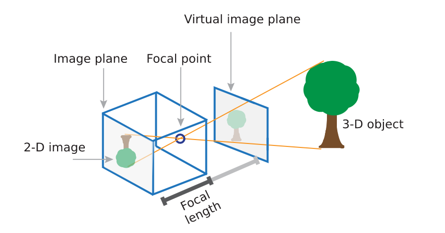</p>
<ul>
<li>成像平面(image plane)：相机的CCD平面，图像在这个平面上形成，注意后续讨论的image plane一般会是指的呈现正像的那个平面<code>Virtual image plane</code>。</li>
<li><code>Focal lenth</code> 相机焦距</li>
</ul>
<h3 id="四个坐标系"><a href="#四个坐标系" class="headerlink" title="四个坐标系"></a>四个坐标系</h3><p>相机标定涉及以下四个坐标系</p>
<ul>
<li>世界坐标系<code>world coordinate</code> (x<sub>w</sub>,y<sub>w</sub>,z<sub>w</sub>)，是一个三维直角坐标系，以其为基准可以描述相机和待测物体的空间位置。世界坐标系的位置可以根据实际情况自由确定。</li>
<li>相机坐标系<code>camera coordinate</code> (x<sub>c</sub>,y<sub>c</sub>,z<sub>c</sub>)，原点位于<strong>镜头光心处（针孔模型中的针孔）</strong>，x、y轴分别与相面的两边平行，z轴为镜头光轴，与像平面垂直。</li>
<li>图像坐标系：物理成像平面，原点是相机光轴与成像平面的交点，是图像的中心点，坐标用x,y表示</li>
<li>像素坐标系：是图像像素坐标，($u$,$v$)表示，原点在图像左上角</li>
</ul>
<p>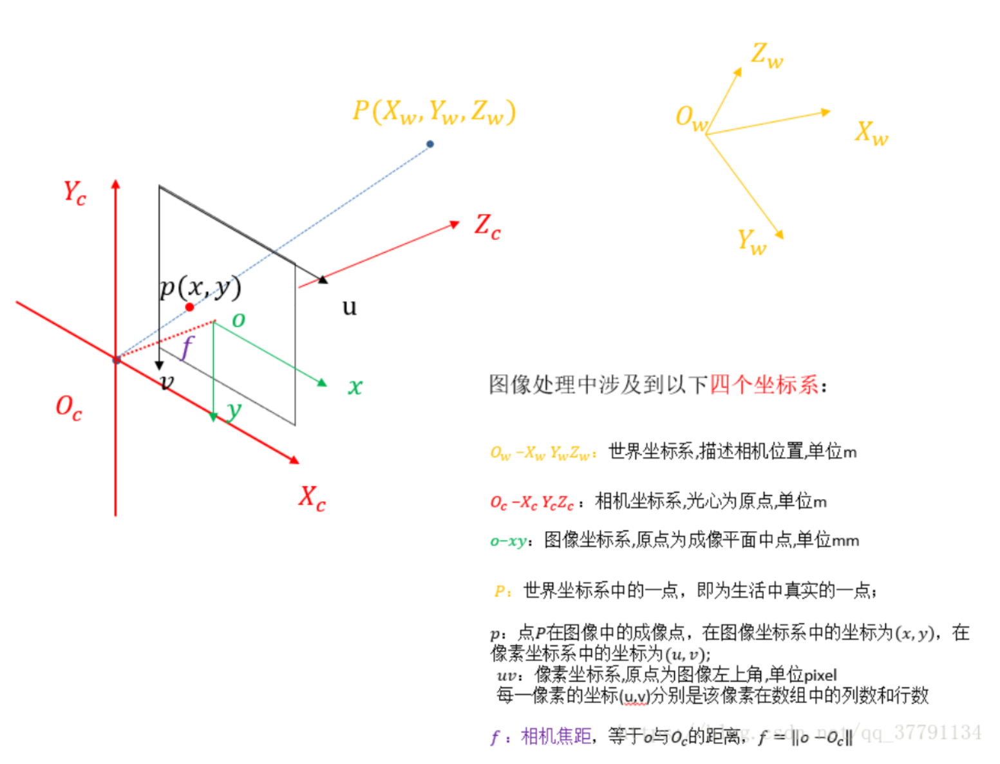</p>
<h3 id="世界坐标系到相机坐标系转换"><a href="#世界坐标系到相机坐标系转换" class="headerlink" title="世界坐标系到相机坐标系转换"></a>世界坐标系到相机坐标系转换</h3><script type="math/tex; mode=display">
\begin{bmatrix}{X_{c}}\\{Y_{c}}\\{Z_{c}}\\{1}\\\end{bmatrix}
=
\begin{bmatrix}{R}&{t}\\{0}&{1}\\\end{bmatrix}
\begin{bmatrix}{X_{w}}\\{Y_{w}}\\{Z_{w}}\\{1}\\\end{bmatrix}</script><p>假设物体在空间中的三维点坐标为(X<sub>w</sub>,Y<sub>w</sub>,Z<sub>w</sub>)，通过一个刚体变换（左乘该刚体 <code>rigid</code> 变换），变换到相机坐标系，此时坐标变为(X<sub>c</sub>,Y<sub>c</sub>,Z<sub>c</sub>)。为了满足矩阵乘法，添加了1</p>
<h3 id="相机坐标系到图像坐标系的转换"><a href="#相机坐标系到图像坐标系的转换" class="headerlink" title="相机坐标系到图像坐标系的转换"></a>相机坐标系到图像坐标系的转换</h3><p>相机坐标系中的点，根据相似三角形关系，映射到光信后方的成像平面（倒像）。根据虚拟成像平面得到正像。</p>
<ul>
<li>根据比例关系，图像坐标系中点的单位为mm</li>
<li>相机坐标系点(X<sub>c</sub>,Y<sub>c</sub>,Z<sub>c</sub>) 图像坐标系点(x,y)</li>
</ul>
<p>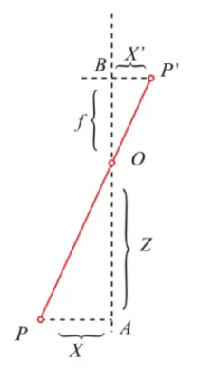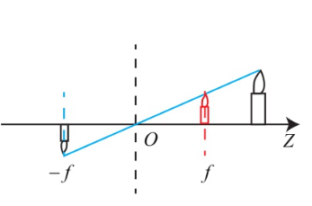</p>
<script type="math/tex; mode=display">
x/f={X_{c}}/{Z_{c}}\\
y/f={Y_{c}}/{Z_{c}}</script><script type="math/tex; mode=display">
x={X_{c}}*f/{Z_{c}}\\
y={Y_{c}}*f/{Z_{c}}</script><p>等式两边配平</p>
<script type="math/tex; mode=display">
\begin{bmatrix}x\\y\\1\end{bmatrix}
=
\begin{bmatrix}{f/Z_{c}}&0&0&0\\0&{f/Z_{c}}&0&0\\0&0&{1/Z_{c}}&0\end{bmatrix}
\begin{bmatrix}{X_{c}}\\{Y_{c}}\\{Z_{c}}\end{bmatrix}</script><h3 id="图像坐标系到像素坐标系的转换"><a href="#图像坐标系到像素坐标系的转换" class="headerlink" title="图像坐标系到像素坐标系的转换"></a>图像坐标系到像素坐标系的转换</h3><p>像素坐标系与成像平面之间，相差了一个缩放和一个原点的平移。我们设像素坐标在 u 轴上缩放了 α 倍，在 v 上缩放了 β 倍。</p>
<p>像素坐标单位是pixel，不含有mm这些距离相关的信息。</p>
<p>假设：</p>
<ul>
<li>图像x方向每个像素对应d<sub>x</sub> mm的物理距离（在物距为f时），图像y方向每个像素对应d<sub>y</sub> mm的物理距离（在物距为f时）<ul>
<li>1/d<sub>x</sub> 含义： x方向每毫米的像素数</li>
<li>1/d<sub>y</sub> 含义： y方向每毫米的像素数</li>
</ul>
</li>
<li>[c<sub>x</sub>,c<sub>y</sub>]是图像坐标系原点在像素坐标系下的坐标</li>
</ul>
<script type="math/tex; mode=display">
\left\{
\begin{matrix}
u={c_{x}}+x/{d_{x}}\\
v={c_{y}}+y/{d_{y}}
\end{matrix}
\right.</script><p>等式两边配平</p>
<script type="math/tex; mode=display">
\begin{bmatrix}
u\\v\\1
\end{bmatrix}
=
\begin{bmatrix}
1/{d_{x}}&0&{c_{x}}\\
0&1/{d_{y}}&{c_{y}}\\
0&0&1
\end{bmatrix}
\begin{bmatrix}
x\\y\\1
\end{bmatrix}</script><h2 id="世界坐标系到像素坐标系的转换"><a href="#世界坐标系到像素坐标系的转换" class="headerlink" title="世界坐标系到像素坐标系的转换"></a>世界坐标系到像素坐标系的转换</h2><script type="math/tex; mode=display">
\begin{bmatrix}
u\\v\\1
\end{bmatrix}
=
\begin{bmatrix}
1/{d_{x}}&0&{c_{x}}\\
0&1/{d_{y}}&{c_{y}}\\
0&0&1
\end{bmatrix}
\begin{bmatrix}{f/Z_{c}}&0&0&0\\0&{f/Z_{c}}&0&0\\0&0&{1/Z_{c}}&0\end{bmatrix}
\begin{bmatrix}{R}&{t}\\{0}&{1}\\\end{bmatrix}
\begin{bmatrix}{X_{w}}\\{Y_{w}}\\{Z_{w}}\\{1}\\\end{bmatrix}</script><p>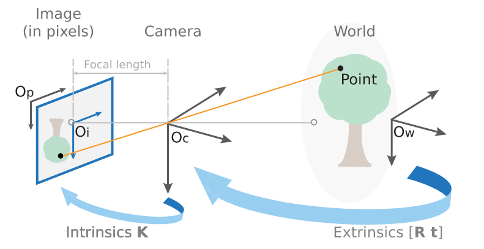</p>
<p>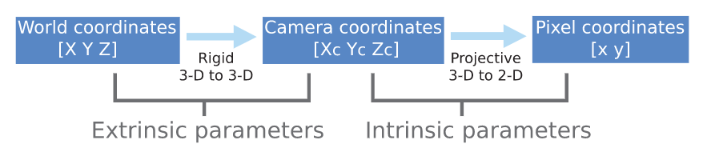</p>
<h3 id="相机内参-intrinsics-parameters"><a href="#相机内参-intrinsics-parameters" class="headerlink" title="相机内参 intrinsics parameters"></a>相机内参 intrinsics parameters</h3><p>将以下矩阵的乘积成为相机内参矩阵<code>intrinsics matrix</code></p>
<ul>
<li>解释了相机坐标系到像素坐标系的变换关系</li>
<li>(2)式一般称为内参矩阵</li>
</ul>
<script type="math/tex; mode=display">
\begin{bmatrix}
1/{d_{x}}&0&{c_{x}}\\
0&1/{d_{y}}&{c_{y}}\\
0&0&1
\end{bmatrix}
\begin{bmatrix}{f/Z_{c}}&0&0&0\\0&{f/Z_{c}}&0&0\\0&0&{1/Z_{c}}&0\end{bmatrix} \tag{1}</script><script type="math/tex; mode=display">
\begin{bmatrix}
{f_{x}}&s&{c_{x}}&0\\
0&{f_{y}}&{c_{y}}&0\\
0&0&1&0
\end{bmatrix} \tag{2}</script><p>s的定义，普通计算时，一般将s假设为0</p>
<p>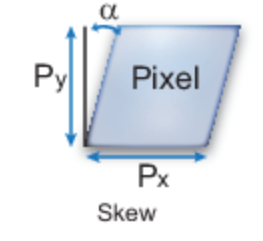</p>
<h3 id="相机外参-extrinsics-parameters"><a href="#相机外参-extrinsics-parameters" class="headerlink" title="相机外参 extrinsics parameters"></a>相机外参 extrinsics parameters</h3><p>刚体变换。相机外参矩阵<code>extrinsics matrix</code> 4*4</p>
<ul>
<li>可以用来表示相机在世界坐标系中的位姿</li>
</ul>
<script type="math/tex; mode=display">
\begin{bmatrix}{R}&{t}\\{0}&{1}\\\end{bmatrix}</script><h2 id="畸变模型"><a href="#畸变模型" class="headerlink" title="畸变模型"></a>畸变模型</h2><p>由透镜引起的畸变称为<strong>径向畸变</strong> <code>Radial distortion</code></p>
<p>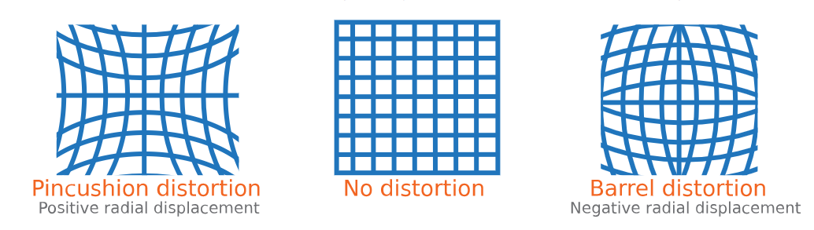</p>
<p>桶形畸变 barrel distortion 越靠近图像中心，图像越被放大</p>
<p>枕型畸变 pincushion distortion  越远离图像中心，图像越被放大</p>
<p>由于透镜与成像平面不平行而导致的畸变成为切向畸变 <code>Tangential Distortion</code></p>
<p>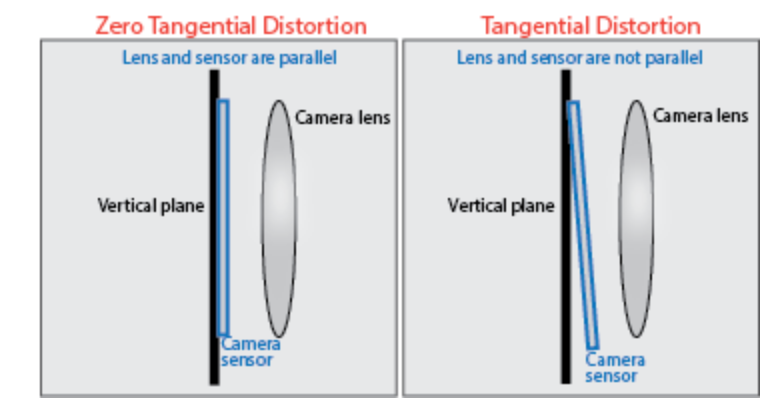</p>
<p> 两种畸变计算(x<sub>distorted</sub>, y<sub>distorted</sub>)</p>
<script type="math/tex; mode=display">
\left\{\begin{matrix}x_{distorted}=x(1+{k_{1}r^{2}}+{k_{2}r^{4}}+{k_{3}r^{6}})+[2*p_1*x*y+p_2(r^2+2*x^2)]\\y_{distorted}=y(1+{k_{1}r^{2}}+{k_{2}r^{4}}+{k_{3}r^{6}})+[2*p_1*(r^2+2*y^2)+p_2*x*y]\end{matrix}\right.</script><p>在没有畸变时，相机坐标系到像素坐标系的转换</p>
<script type="math/tex; mode=display">
\left\{
\begin{matrix}
u=f_x*X_c+c_x\\
v=f_x*Y_c+c_y
\end{matrix}
\right.</script><p>引入畸变后</p>
<script type="math/tex; mode=display">
\left\{
\begin{matrix}
u=f_x*X_{distorted}+c_x\\
v=f_x*Y_{distorted}+c_y
\end{matrix}
\right.</script><h3 id="径向畸变模型"><a href="#径向畸变模型" class="headerlink" title="径向畸变模型"></a>径向畸变模型</h3><p>坐标点沿着长度方向发生了变化，也就是距离原点的长度发生变化</p>
<p> (x<sub>distorted</sub>, y<sub>distorted</sub>)</p>
<p>r^2^ = x^2^+y^2^ (将x,y 转成极坐标表示[r,/σ])</p>
<p>k<sub>1</sub> k<sub>2</sub>k<sub>3</sub> 径向畸变系数</p>
<script type="math/tex; mode=display">
\left\{
\begin{matrix}
x_{distorted}=x(1+{k_{1}r^{2}}+{k_{2}r^{4}}+{k_{3}r^{6}})\\
y_{distorted}=y(1+{k_{1}r^{2}}+{k_{2}r^{4}}+{k_{3}r^{6}})
\end{matrix}
\right.</script><h3 id="切向畸变模型"><a href="#切向畸变模型" class="headerlink" title="切向畸变模型"></a>切向畸变模型</h3><p>坐标点沿着切线方向发生变化，水平夹角发生变化</p>
<p> (x<sub>distorted</sub>, y<sub>distorted</sub>)</p>
<p>r^2^ = x^2^+y^2^</p>
<script type="math/tex; mode=display">
\left\{
\begin{matrix}
x_{distorted}=x+[2*p_1*x*y+p_2(r^2+2*x^2)]\\
y_{distorted}=y+[2*p_1*(r^2+2*y^2)+p_2*x*y]
\end{matrix}
\right.</script><h3 id="畸变总结"><a href="#畸变总结" class="headerlink" title="畸变总结"></a>畸变总结</h3><p>径向畸变 k1 k2 k3</p>
<p>切向畸变 p1 p2</p>
<ul>
<li>实际使用中可以灵活选择畸变模型，如k1 p1 p2 三项</li>
</ul>
<h3 id="去畸变-undistort"><a href="#去畸变-undistort" class="headerlink" title="去畸变 undistort"></a>去畸变 undistort</h3><ul>
<li>将整张图片进行去畸变处理，得到去畸变图像（更常用）</li>
<li>从畸变图像某个点出发，按照畸变模型，找到去畸变后的点</li>
</ul>
<h2 id="圆点与棋盘格"><a href="#圆点与棋盘格" class="headerlink" title="圆点与棋盘格"></a>圆点与棋盘格</h2><p>结论： 圆点标定板的标定精度优于棋盘格</p>
<p>圆点标定板：中心拟合精度高，但是存在偏心误差问题。</p>
<ul>
<li>圆的中心的投影，不等于投影出的圆的中心</li>
</ul>
<p>棋盘格标定板：中心拟合精度低，但是不存在偏心误差问题</p>
<p>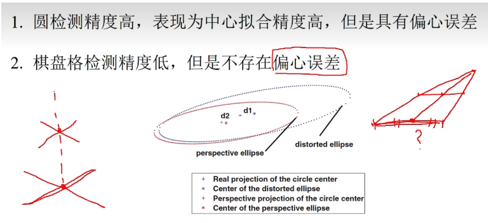</p>
<p>圆环的优化方法：</p>
<ul>
<li>将椭圆通过透视投影，投影成正圆</li>
<li>检测正圆圆心</li>
<li>再将正圆圆心投影回椭圆平面</li>
</ul>
<h2 id="OpenCV-相机标定"><a href="#OpenCV-相机标定" class="headerlink" title="OpenCV 相机标定"></a>OpenCV 相机标定</h2><p>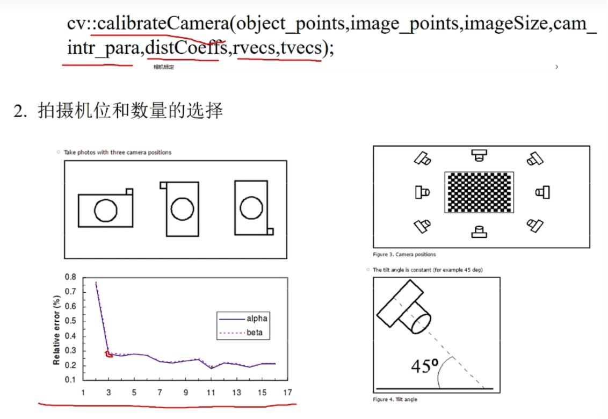</p>
<ul>
<li>让标定板覆盖整个相机平面。永远在中间的话，畸变参数会不准</li>
<li>改变角度</li>
<li>数量10-20张</li>
<li><code>cv::calibrationCamera</code> 返回 重投影误差 这个参数，一般来说，重投影误差越小，表示这次标定精度越好</li>
</ul>
<h3 id="标定结果的评价"><a href="#标定结果的评价" class="headerlink" title="标定结果的评价"></a>标定结果的评价</h3><ul>
<li><p>重投影误差 re-projection error</p>
</li>
<li><p>影响因素：</p>
<ul>
<li><p>角点检测精度</p>
</li>
<li><p>相机本身噪声，相机固定</p>
</li>
<li><p>相机分辨率，其他条件相同，分辨率高的话，re-projection error可能会更大（单位是像素）</p>
</li>
<li><p>相机本身的标定算法的最优化</p>
</li>
</ul>
</li>
</ul>
<p>其它思路：</p>
<ol>
<li>通过图像上某两个角点反向投影到3D空间，计算距离，与其实际物理距离进行比较</li>
</ol>
<h2 id="相机内参标定后的应用"><a href="#相机内参标定后的应用" class="headerlink" title="相机内参标定后的应用"></a>相机内参标定后的应用</h2><h3 id="PnP问题"><a href="#PnP问题" class="headerlink" title="PnP问题"></a>PnP问题</h3><p><strong>solvePnP</strong></p>
<p>已知n点之间的对应关系，怎么求它们之间的关系。</p>
<p>已知3D点，对应2D角点，图像坐标系到像素坐标系的变换，畸变参数，去求某一张图片的外参</p>
<p>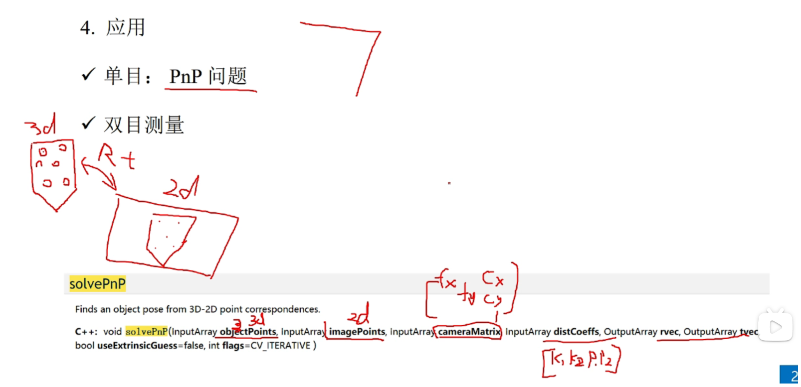</p>
<h2 id="其它"><a href="#其它" class="headerlink" title="其它"></a>其它</h2><ul>
<li>使用背光板</li>
<li>过渡带越长，越影响检测</li>
</ul>
<p>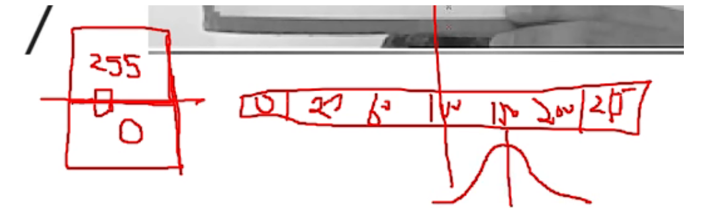</p>
<p>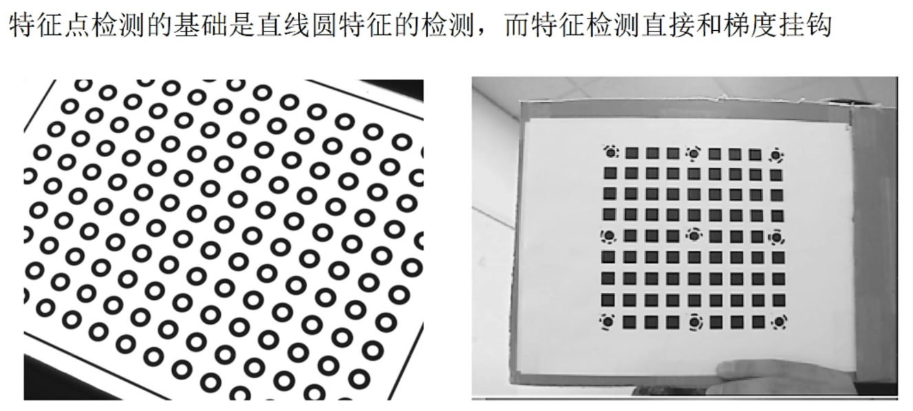</p>
<ul>
<li>快门时间调低，光圈调小</li>
</ul>
 
      <!-- reward -->
      
    </div>
    

    <!-- copyright -->
    
    <div class="declare">
      <ul class="post-copyright">
        <li>
          <i class="ri-copyright-line"></i>
          <strong>版权声明： </strong>
          
          本博客所有文章除特别声明外，著作权归作者所有。转载请注明出处！
          
        </li>
      </ul>
    </div>
    
    <footer class="article-footer">
       
<div class="share-btn">
      <span class="share-sns share-outer">
        <i class="ri-share-forward-line"></i>
        分享
      </span>
      <div class="share-wrap">
        <i class="arrow"></i>
        <div class="share-icons">
          
          <a class="weibo share-sns" href="javascript:;" data-type="weibo">
            <i class="ri-weibo-fill"></i>
          </a>
          <a class="weixin share-sns wxFab" href="javascript:;" data-type="weixin">
            <i class="ri-wechat-fill"></i>
          </a>
          <a class="qq share-sns" href="javascript:;" data-type="qq">
            <i class="ri-qq-fill"></i>
          </a>
          <a class="douban share-sns" href="javascript:;" data-type="douban">
            <i class="ri-douban-line"></i>
          </a>
          <!-- <a class="qzone share-sns" href="javascript:;" data-type="qzone">
            <i class="icon icon-qzone"></i>
          </a> -->
          
          <a class="facebook share-sns" href="javascript:;" data-type="facebook">
            <i class="ri-facebook-circle-fill"></i>
          </a>
          <a class="twitter share-sns" href="javascript:;" data-type="twitter">
            <i class="ri-twitter-fill"></i>
          </a>
          <a class="google share-sns" href="javascript:;" data-type="google">
            <i class="ri-google-fill"></i>
          </a>
        </div>
      </div>
</div>

<div class="wx-share-modal">
    <a class="modal-close" href="javascript:;"><i class="ri-close-circle-line"></i></a>
    <p>扫一扫，分享到微信</p>
    <div class="wx-qrcode">
      
    </div>
</div>

<div id="share-mask"></div>  
  <ul class="article-tag-list" itemprop="keywords"><li class="article-tag-list-item"><a class="article-tag-list-link" href="/tags/computer-vision/" rel="tag">computer vision</a></li></ul>

    </footer>
  </div>

   
  <nav class="article-nav">
    
      <a href="/2022/12/18/ros1-ros2-%E4%BD%BF%E7%94%A8%E6%97%B6%E7%9A%84%E4%B8%80%E4%BA%9B%E5%B7%AE%E5%BC%82/" class="article-nav-link">
        <strong class="article-nav-caption">上一篇</strong>
        <div class="article-nav-title">
          
            ros1 ros2 使用时的一些差异
          
        </div>
      </a>
    
    
      <a href="/2022/07/31/Vim-Git-Defualt-Editor/" class="article-nav-link">
        <strong class="article-nav-caption">下一篇</strong>
        <div class="article-nav-title">Vim &amp; Git Defualt Editor</div>
      </a>
    
  </nav>

  
   
    
    <script src="https://cdn.staticfile.org/twikoo/1.4.18/twikoo.all.min.js"></script>
    <div id="twikoo" class="twikoo"></div>
    <script>
        twikoo.init({
            envId: ""
        })
    </script>
 
</article>

</section>
      <footer class="footer">
  <div class="outer">
    <ul>
      <li>
        Copyrights &copy;
        2020-2023
        <i class="ri-heart-fill heart_icon"></i> cyg
      </li>
    </ul>
    <ul>
      <li>
        
      </li>
    </ul>
    <ul>
      <li>
        
        
        <span>
  <span><i class="ri-user-3-fill"></i>访问人数:<span id="busuanzi_value_site_uv"></span></span>
  <span class="division">|</span>
  <span><i class="ri-eye-fill"></i>浏览次数:<span id="busuanzi_value_page_pv"></span></span>
</span>
        
      </li>
    </ul>
    <ul>
      
    </ul>
    <ul>
      
    </ul>
    <ul>
      <li>
        <!-- cnzz统计 -->
        
        <script type="text/javascript" src='https://s9.cnzz.com/z_stat.php?id=1278069914&amp;web_id=1278069914'></script>
        
      </li>
    </ul>
  </div>
</footer>    
    </main>
    <div class="float_btns">
      <div class="totop" id="totop">
  <i class="ri-arrow-up-line"></i>
</div>

<div class="todark" id="todark">
  <i class="ri-moon-line"></i>
</div>

    </div>
    <aside class="sidebar on">
      <button class="navbar-toggle"></button>
<nav class="navbar">
  
  <div class="logo">
    <a href="/"></a>
  </div>
  
  <ul class="nav nav-main">
    
    <li class="nav-item">
      <a class="nav-item-link" href="/">主页</a>
    </li>
    
    <li class="nav-item">
      <a class="nav-item-link" href="/archives">归档</a>
    </li>
    
    <li class="nav-item">
      <a class="nav-item-link" href="/tags">标签</a>
    </li>
    
    <li class="nav-item">
      <a class="nav-item-link" href="/friends">神秘链接</a>
    </li>
    
    <li class="nav-item">
      <a class="nav-item-link" href="/about">关于我</a>
    </li>
    
  </ul>
</nav>
<nav class="navbar navbar-bottom">
  <ul class="nav">
    <li class="nav-item">
      
      <a class="nav-item-link nav-item-search"  title="搜索">
        <i class="ri-search-line"></i>
      </a>
      
      
      <a class="nav-item-link" target="_blank" href="/atom.xml" title="RSS Feed">
        <i class="ri-rss-line"></i>
      </a>
      
    </li>
  </ul>
</nav>
<div class="search-form-wrap">
  <div class="local-search local-search-plugin">
  <input type="search" id="local-search-input" class="local-search-input" placeholder="Search...">
  <div id="local-search-result" class="local-search-result"></div>
</div>
</div>
    </aside>
    <div id="mask"></div>

<!-- #reward -->
<div id="reward">
  <span class="close"><i class="ri-close-line"></i></span>
  <p class="reward-p"><i class="ri-cup-line"></i></p>
  <div class="reward-box">
    
    
  </div>
</div>
    
<script src="/js/jquery-3.6.0.min.js"></script>
 
<script src="/js/lazyload.min.js"></script>

<!-- Tocbot -->
 
<script src="/js/tocbot.min.js"></script>

<script>
  tocbot.init({
    tocSelector: ".tocbot",
    contentSelector: ".article-entry",
    headingSelector: "h1, h2, h3, h4, h5, h6",
    hasInnerContainers: true,
    scrollSmooth: true,
    scrollContainer: "main",
    positionFixedSelector: ".tocbot",
    positionFixedClass: "is-position-fixed",
    fixedSidebarOffset: "auto",
  });
</script>

<script src="https://cdn.staticfile.org/jquery-modal/0.9.2/jquery.modal.min.js"></script>
<link
  rel="stylesheet"
  href="https://cdn.staticfile.org/jquery-modal/0.9.2/jquery.modal.min.css"
/>
<script src="https://cdn.staticfile.org/justifiedGallery/3.8.1/js/jquery.justifiedGallery.min.js"></script>

<script src="/dist/main.js"></script>

<!-- ImageViewer -->
 <!-- Root element of PhotoSwipe. Must have class pswp. -->
<div class="pswp" tabindex="-1" role="dialog" aria-hidden="true">

    <!-- Background of PhotoSwipe. 
         It's a separate element as animating opacity is faster than rgba(). -->
    <div class="pswp__bg"></div>

    <!-- Slides wrapper with overflow:hidden. -->
    <div class="pswp__scroll-wrap">

        <!-- Container that holds slides. 
            PhotoSwipe keeps only 3 of them in the DOM to save memory.
            Don't modify these 3 pswp__item elements, data is added later on. -->
        <div class="pswp__container">
            <div class="pswp__item"></div>
            <div class="pswp__item"></div>
            <div class="pswp__item"></div>
        </div>

        <!-- Default (PhotoSwipeUI_Default) interface on top of sliding area. Can be changed. -->
        <div class="pswp__ui pswp__ui--hidden">

            <div class="pswp__top-bar">

                <!--  Controls are self-explanatory. Order can be changed. -->

                <div class="pswp__counter"></div>

                <button class="pswp__button pswp__button--close" title="Close (Esc)"></button>

                <button class="pswp__button pswp__button--share" style="display:none" title="Share"></button>

                <button class="pswp__button pswp__button--fs" title="Toggle fullscreen"></button>

                <button class="pswp__button pswp__button--zoom" title="Zoom in/out"></button>

                <!-- Preloader demo http://codepen.io/dimsemenov/pen/yyBWoR -->
                <!-- element will get class pswp__preloader--active when preloader is running -->
                <div class="pswp__preloader">
                    <div class="pswp__preloader__icn">
                        <div class="pswp__preloader__cut">
                            <div class="pswp__preloader__donut"></div>
                        </div>
                    </div>
                </div>
            </div>

            <div class="pswp__share-modal pswp__share-modal--hidden pswp__single-tap">
                <div class="pswp__share-tooltip"></div>
            </div>

            <button class="pswp__button pswp__button--arrow--left" title="Previous (arrow left)">
            </button>

            <button class="pswp__button pswp__button--arrow--right" title="Next (arrow right)">
            </button>

            <div class="pswp__caption">
                <div class="pswp__caption__center"></div>
            </div>

        </div>

    </div>

</div>

<link rel="stylesheet" href="https://cdn.staticfile.org/photoswipe/4.1.3/photoswipe.min.css">
<link rel="stylesheet" href="https://cdn.staticfile.org/photoswipe/4.1.3/default-skin/default-skin.min.css">
<script src="https://cdn.staticfile.org/photoswipe/4.1.3/photoswipe.min.js"></script>
<script src="https://cdn.staticfile.org/photoswipe/4.1.3/photoswipe-ui-default.min.js"></script>

<script>
    function viewer_init() {
        let pswpElement = document.querySelectorAll('.pswp')[0];
        let $imgArr = document.querySelectorAll(('.article-entry img:not(.reward-img)'))

        $imgArr.forEach(($em, i) => {
            $em.onclick = () => {
                // slider展开状态
                // todo: 这样不好，后面改成状态
                if (document.querySelector('.left-col.show')) return
                let items = []
                $imgArr.forEach(($em2, i2) => {
                    let img = $em2.getAttribute('data-idx', i2)
                    let src = $em2.getAttribute('data-target') || $em2.getAttribute('src')
                    let title = $em2.getAttribute('alt')
                    // 获得原图尺寸
                    const image = new Image()
                    image.src = src
                    items.push({
                        src: src,
                        w: image.width || $em2.width,
                        h: image.height || $em2.height,
                        title: title
                    })
                })
                var gallery = new PhotoSwipe(pswpElement, PhotoSwipeUI_Default, items, {
                    index: parseInt(i)
                });
                gallery.init()
            }
        })
    }
    viewer_init()
</script> 
<!-- MathJax -->
 <script type="text/x-mathjax-config">
  MathJax.Hub.Config({
      tex2jax: {
          inlineMath: [ ['$','$'], ["\\(","\\)"]  ],
          processEscapes: true,
          skipTags: ['script', 'noscript', 'style', 'textarea', 'pre', 'code']
      }
  });

  MathJax.Hub.Queue(function() {
      var all = MathJax.Hub.getAllJax(), i;
      for(i=0; i < all.length; i += 1) {
          all[i].SourceElement().parentNode.className += ' has-jax';
      }
  });
</script>

<script src="https://cdn.staticfile.org/mathjax/2.7.7/MathJax.js"></script>
<script src="https://cdn.staticfile.org/mathjax/2.7.7/config/TeX-AMS-MML_HTMLorMML-full.js"></script>
<script>
  var ayerConfig = {
    mathjax: true,
  };
</script>

<!-- Katex -->

<!-- busuanzi  -->
 
<script src="/js/busuanzi-2.3.pure.min.js"></script>
 
<!-- ClickLove -->

<!-- ClickBoom1 -->

<script src="https://cdn.staticfile.org/animejs/3.2.1/anime.min.js"></script>

<script src="/js/clickBoom1.js"></script>
 
<!-- ClickBoom2 -->

<!-- CodeCopy -->
 
<link rel="stylesheet" href="/css/clipboard.css">
 <script src="https://cdn.staticfile.org/clipboard.js/2.0.10/clipboard.min.js"></script>
<script>
  function wait(callback, seconds) {
    var timelag = null;
    timelag = window.setTimeout(callback, seconds);
  }
  !function (e, t, a) {
    var initCopyCode = function(){
      var copyHtml = '';
      copyHtml += '<button class="btn-copy" data-clipboard-snippet="">';
      copyHtml += '<i class="ri-file-copy-2-line"></i><span>COPY</span>';
      copyHtml += '</button>';
      $(".highlight .code pre").before(copyHtml);
      $(".article pre code").before(copyHtml);
      var clipboard = new ClipboardJS('.btn-copy', {
        target: function(trigger) {
          return trigger.nextElementSibling;
        }
      });
      clipboard.on('success', function(e) {
        let $btn = $(e.trigger);
        $btn.addClass('copied');
        let $icon = $($btn.find('i'));
        $icon.removeClass('ri-file-copy-2-line');
        $icon.addClass('ri-checkbox-circle-line');
        let $span = $($btn.find('span'));
        $span[0].innerText = 'COPIED';
        
        wait(function () { // 等待两秒钟后恢复
          $icon.removeClass('ri-checkbox-circle-line');
          $icon.addClass('ri-file-copy-2-line');
          $span[0].innerText = 'COPY';
        }, 2000);
      });
      clipboard.on('error', function(e) {
        e.clearSelection();
        let $btn = $(e.trigger);
        $btn.addClass('copy-failed');
        let $icon = $($btn.find('i'));
        $icon.removeClass('ri-file-copy-2-line');
        $icon.addClass('ri-time-line');
        let $span = $($btn.find('span'));
        $span[0].innerText = 'COPY FAILED';
        
        wait(function () { // 等待两秒钟后恢复
          $icon.removeClass('ri-time-line');
          $icon.addClass('ri-file-copy-2-line');
          $span[0].innerText = 'COPY';
        }, 2000);
      });
    }
    initCopyCode();
  }(window, document);
</script>
 
<!-- CanvasBackground -->

<script>
  if (window.mermaid) {
    mermaid.initialize({ theme: "forest" });
  }
</script>


    
    <div id="music">
    
    
    
    <iframe frameborder="no" border="1" marginwidth="0" marginheight="0" width="200" height="52"
        src="//music.163.com/outchain/player?type=2&id=33705474&auto=0&height=32"></iframe>
</div>

<style>
    #music {
        position: fixed;
        right: 15px;
        bottom: 0;
        z-index: 998;
    }
</style>
    
    

  </div>
<script src="/live2dw/lib/L2Dwidget.min.js?094cbace49a39548bed64abff5988b05"></script><script>L2Dwidget.init({"pluginModelPath":"assets/","model":{"jsonPath":"kesyoban"},"display":{"position":"right","width":300,"height":600},"mobile":{"show":true},"rect":"opacity:0.7","log":false,"pluginJsPath":"lib/","pluginRootPath":"live2dw/","tagMode":false});</script></body>

</html>